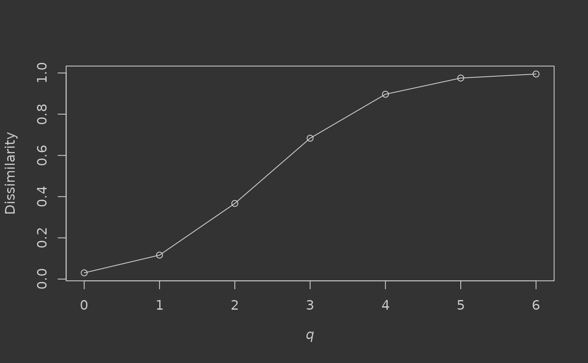

Let’s use dissCqN to calculate compositional dissimilarity for a dataset of tree species counts from tropical forests of Barro Colorado Island, Panama (Condit et al., 2002), provided with the vegan package. There are 50 sampled 1-hectare forest plots (rows) and 225 total tree species (columns). Let’s take a look at a sample:
# install.packages(c("dissCqN", "vegan"))
library(dissCqN)
data(BCI, package = "vegan")
rownames(BCI) <- paste0("plot_", 1:nrow(BCI))
knitr::kable(
BCI[sample(1:nrow(BCI), 5),
sample(1:ncol(BCI), 5)]
)| Anacardium.excelsum | Piper.reticulatum | Schizolobium.parahyba | Astrocaryum.standleyanum | Inga.spectabilis | |
|---|---|---|---|---|---|
| plot_8 | 1 | 0 | 0 | 0 | 0 |
| plot_5 | 0 | 2 | 0 | 6 | 0 |
| plot_38 | 0 | 0 | 0 | 1 | 0 |
| plot_19 | 0 | 0 | 0 | 2 | 1 |
| plot_37 | 0 | 0 | 0 | 2 | 0 |
We can calculate multiple-assemblage dissimilarity for the forest plots for, say, orders q = 0-6:
q <- 0:6
(BCI.diss.mult <- dissCqN(BCI, q))
#> C0N C1N C2N C3N C4N C5N C6N
#> 0.03017387 0.11635124 0.36695937 0.68341668 0.89674072 0.97536758 0.99488515And plot a dissimilarity profile for q (Jost et al., 2011):
par(bg = "#333333", fg = "#cccccc") # dark plot scheme
plot(q, BCI.diss.mult, xlab = expression(italic("q")), ylab = "Dissimilarity",
col.axis = "#cccccc", col.lab = "#cccccc")
lines(q, BCI.diss.mult)
We can see that when only presence-absence of trees is considered (q = 0, or Sørensen dissimilarity), dissimilarity is very low (0.03) – implying no major difference in species composition between the sampled assemblages. When tree abundance is taken into account however, dissimilarity steadily increases through the values of q as changes in relative abundance of common species have increasing influence on community difference (reaching >0.99 for q = 6). Plotting such profiles can help to illustrate the dominance of common species in the community, with steeper increases associated with higher dominance. If under-sampling of the community is suspected, dissimilarity for q > 0 or q > 1 is likely to be more reliable for assessing difference, as the common species are probably still sampled relatively accurately using the abundance-based measures.
What about pairwise dissimilarity? Simply set pairwise = TRUE:
system.time(
BCI.diss.pair <- dissCqN(BCI, pairwise = TRUE)
)
#> user system elapsed
#> 6.549 0.024 6.575This generates a symmetrical pairwise dissimilarity matrix for each value of q (0–2 only), returned in a list:
lapply(BCI.diss.pair, function(i) i[1:5, 1:5])
#> $C0N
#> plot_1 plot_2 plot_3 plot_4 plot_5
#> plot_1 0.0000000 0.2768362 0.3005464 0.2834225 0.2989691
#> plot_2 0.2768362 0.0000000 0.2873563 0.2808989 0.3081081
#> plot_3 0.3005464 0.2873563 0.0000000 0.2717391 0.2984293
#> plot_4 0.2834225 0.2808989 0.2717391 0.0000000 0.2615385
#> plot_5 0.2989691 0.3081081 0.2984293 0.2615385 0.0000000
#>
#> $C1N
#> plot_1 plot_2 plot_3 plot_4 plot_5
#> plot_1 0.0000000 0.1306597 0.1760514 0.1919161 0.1942899
#> plot_2 0.1306597 0.0000000 0.1356817 0.1658189 0.1919815
#> plot_3 0.1760514 0.1356817 0.0000000 0.1637515 0.1732861
#> plot_4 0.1919161 0.1658189 0.1637515 0.0000000 0.1783943
#> plot_5 0.1942899 0.1919815 0.1732861 0.1783943 0.0000000
#>
#> $C2N
#> plot_1 plot_2 plot_3 plot_4 plot_5
#> plot_1 0.0000000 0.1243699 0.2089619 0.2074992 0.2415559
#> plot_2 0.1243699 0.0000000 0.1089096 0.1332090 0.2308209
#> plot_3 0.2089619 0.1089096 0.0000000 0.1556811 0.2009035
#> plot_4 0.2074992 0.1332090 0.1556811 0.0000000 0.2877408
#> plot_5 0.2415559 0.2308209 0.2009035 0.2877408 0.0000000Note that another way to calculate multiple-assemblage dissimilarity might be to take the means of these pairwise matrices (omitting self-comparisons):
sapply(BCI.diss.pair, function(i) {
sum(i) / (prod(dim(i)) - dim(i)[1])
})
#> C0N C1N C2N
#> 0.3399075 0.2826509 0.3273713These values are biased however, as they never take into account species shared by more than two assemblages, and there is also the problem of covariance between the pairwise comparisons (Diserud & Ødegaard, 2007). Multiple-assemblage measures should generally be preferred when assessing overall community difference for randomly-sampled assemblages. However, when assessing change across ordered assemblages, for example along geographic or environmental gradients, pairwise comparisons can be more appropriate.
Subsets of assemblages can also be compared pairwise (using names or indices), if only some comparisons are of interest:
dissCqN(BCI, pairwise = TRUE, compare.sub = list(1:2, 3:5))
#> $C0N
#> plot_3 plot_4 plot_5
#> plot_1 0.3005464 0.2834225 0.2989691
#> plot_2 0.2873563 0.2808989 0.3081081
#>
#> $C1N
#> plot_3 plot_4 plot_5
#> plot_1 0.1760514 0.1919161 0.1942899
#> plot_2 0.1356817 0.1658189 0.1919815
#>
#> $C2N
#> plot_3 plot_4 plot_5
#> plot_1 0.2089619 0.2074992 0.2415559
#> plot_2 0.1089096 0.1332090 0.2308209This could potentially save time if the total number of assemblages in the dataset is very large.
Condit, R., Pitman, N., Leigh, E. G., Chave, J., Terborgh, J., Foster, R. B., Núñez, P., Aguilar, S., Valencia, R., Villa, G., Muller-Landau, H. C., Losos, E., & Hubbell, S. P. (2002). Beta-diversity in tropical forest trees. Science, 295(5555), 666–669. https://doi.org/10/c8cjfz
Diserud, O. H., & Ødegaard, F. (2007). A multiple-site similarity measure. Biology Letters, 3(1), 20–22. https://doi.org/10/bwhfx6
Jost, L., Chao, A., & Chazdon, R. L. (2011). Compositional similarity and beta diversity (A. E. Magurran & B. J. McGill, Eds.; pp. 66–84). Oxford University Press.